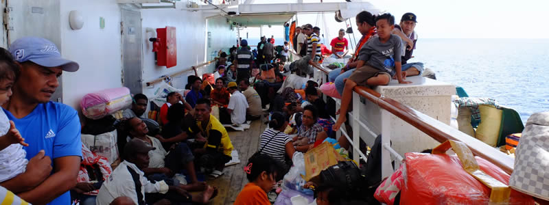

Adventures on Pelni

Most tourists choose to travel between Sulawesi and Flores by air for the obvious reasons of speed and convenience with flights scheduled everyday. Most Indonesians however travel by ferry in economy class at a fraction of the cost of a flight. The journey takes 2o hours and there is only one ferry every two weeks so no wonder not many travellers choose this alternative - it takes some organising and timing.
We arrived at the port in Makassar two hours in advance of the scheduled departure at 11pm without having previously booked tickets. We were taken to a travel agent opposite the port by one of the staff who kindly waited with us to make sure we were ok until we had our tickets in hand.
We booked a 1st class cabin for £35 each following a recommendation from a Kiwi couple we had met in Bunaken, mainly to have somewhere safe to leave our bags. It was still half of the price of a flight. We had tried to book the ticket in Rantepao (Tana Toraja) but the agent there was convinced we had to go in separate cabins for men and women, so we waited till the last minute and successfully booked a cabin for both of us without any fuss. We did get asked if we were husband and wife but I think that was more curiosity than official requirement as no one ever mentioned marriage certificates. Phew!
At 10.30pm we headed to the terminal to find hundreds of Indonesians and luggage spread all over the floor. We waited at one of the warungs (restaurants) drinking tea and playing pick up sticks. At some point a huge row broke out between the women running our warung and the one next door. It was pretty entertaining even if we couldn't understand the reason, complete with lots of shouting, thrown water bottles and stick threats, while the port security watched indifferently.
Most people travel economy class so the first to get onboard bags the best "seats". We only realised how much this mattered once we saw the conditions inside. At 3am, four hours after the scheduled departure the boarding started. Chaos descended, everyone pushed and hit each other carrying boxes on their heads, bags on their back and shoulders and children in their arms. We just stepped back and watched, waiting for an orderly moment, but that moment never came and eventually we went for it and got equally squeezed like oranges. But it wasn't over yet, we had only gotten as far as the waiting room - like a boarding gate at an airport.
Entering the ship was a further sardine experience. Inside it was a horror movie. It turns out the previous Pelni ship which was meant to have passed by Makassar two weeks previously had been cancelled, so everyone had to wait for this one. That meant there was no space inside, no windows and no ventilation turned the air rancid and the floor in the toilets was more of a paddling pool. There were people camped in every corridor, stairway and corner surrounded by rubbish.
We tip toed between hundreds of people staring at us white bule, and eventually found our cabin, feeling guilty for being fortunate enough to be able to afford it. It was our safe haven for the next 20 hours and we were so glad we had decided to book it. We were told that normally there would be more space in economy class but the previous ship's cancellation meant this one was bursting at the seams.
The cabin was great. We had two beds, a desk and an ensuite bathroom which even had a hot water shower. Luxury! Our 1st class ticket also entitled us to free food at the restaurant which to be honest was probably worse than the economy class food.
We went for a couple of wanders around the boat and it was noticeable how much less friendly people were than in Sulawesi. Or maybe they hated us because we were travelling in first class? I felt like offering our facilities to anyone I saw in need of a toilet or shower but everyone seemed to be happy in their area, this is normal for them. It's just how it is. Only strange for us westerners, and our concepts of privacy and hygiene standards.
We got chatting to a couple of Romanian girls travelling in economy, watching the gorgeous sunset from the back of the boat, perfect if it wasn't for large amounts of rubbish flying past and landing in the sea. After a while we realised it was the boat staff who seemingly as part of their jobs were emptying large bins from inside the boat into the ocean without a trace of guilt or environmental concern. No wonder all other passengers did the same.
A few hours later we arrived in Maumere, Flores. After another horrible squeeze we were out of the boat and into the port. It was out of the fire and into the frying pan - a mob of hundreds of touts attacked us while the police hit them with what looked like long pieces of hose to force them to stand back and keep the path clear for people to exit. It was hard work to get through the craziness and two days later we found ourselves still travelling with Dus, one of the touts who convinced us to let him take us to a hotel that night and turned out to be a really nice guy.
Comments